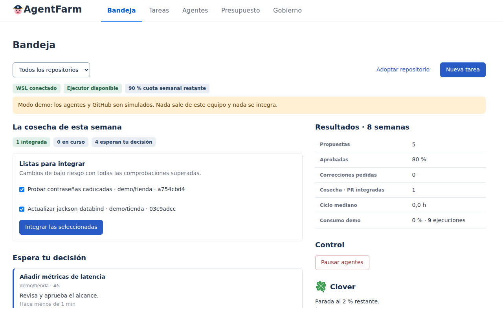
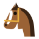
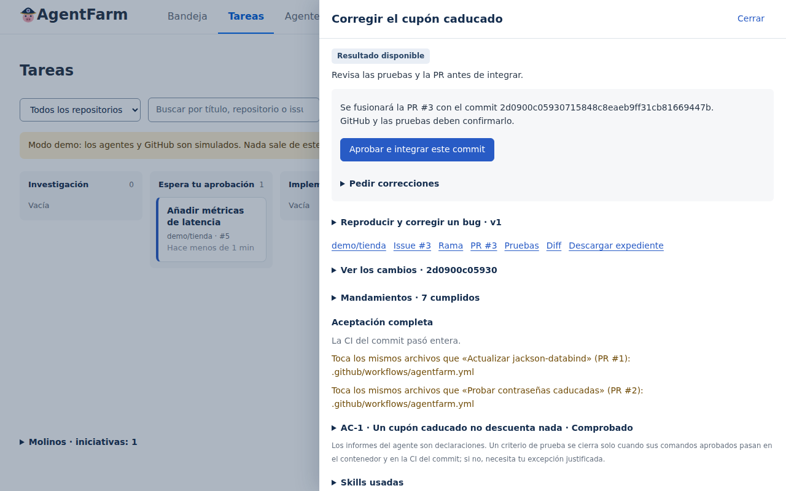

Conecta una granja de agentes de código. Vigilan la CI y las dependencias, proponen arreglos y te traen cada cambio con sus pruebas. Tú solo decides qué entra.
git clone https://github.com/alejbormeg/AgentFarm.git
cd AgentFarm && ./agentfarm demoUn minuto, con agentes y GitHub simulados. Necesitas JDK 21, git y python3. Nada sale de tu equipo.

Son comprobaciones, no buenos deseos: cada cambio muestra cuáles cumple y por qué, y uno incumplido bloquea la integración. El panel lee la CI y el diff por su cuenta, en lugar de creer lo que dice el agente.

BoxerImplementa. «Trabajaré más duro».